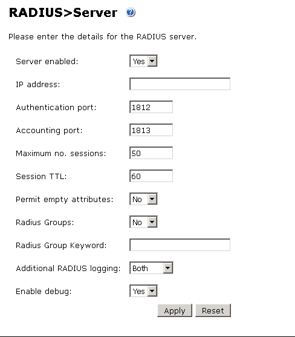
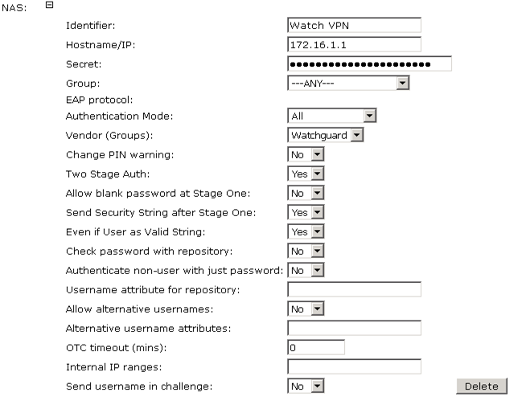
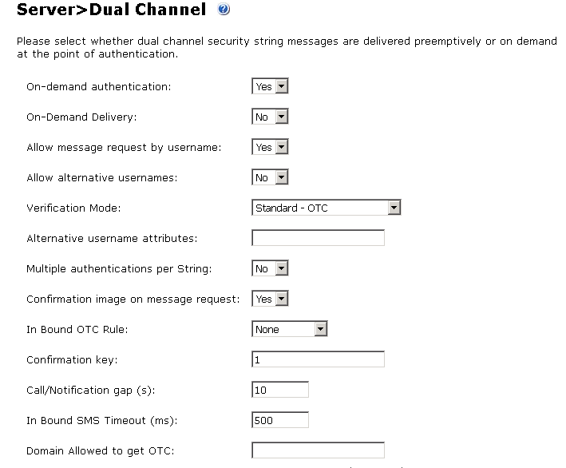
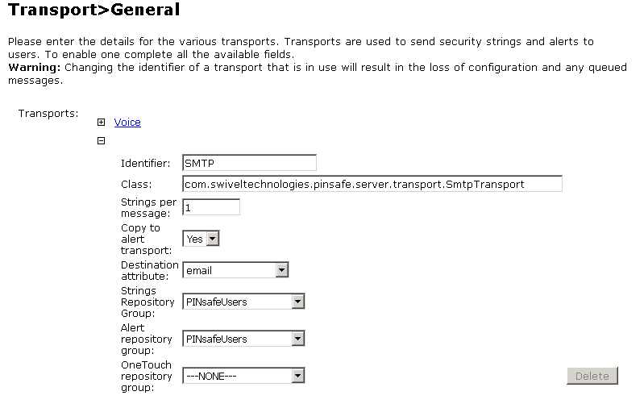

Integration Overview
The Swivel Secure PINsafe® server is RADIUS compatible and can be used as a RADIUS server. This document describes the steps necessary to integrate the WatchGuard Mobile VPN with SSL client software download process and Mobile VPN with SSL client authentication with the Swivel Secure PINsafe two-factor authentication solution.
This diagram shows the data flow for two-factor authentication through integration with Swivel’s PINsafe server, which is described below.

Here is a high level overview of the data flow for two-factor authentication:
- A user initiates primary authentication to the WatchGuard Firebox.
- The Firebox sends an authentication request to PINsafe.
- PINsafe checks the password. If it is correct, it responds with a RADIUS challenge (one-time code) to the Firebox.
- The user is prompted with a second dialog box.
- If the user types a correct passphrase and PINsafe is set to Dual Challenge On Demand, PINsafe will send a dual channel message security string message as a one-time code to the user in a specified format (SMS text message, Turing image, mobile phone client application, or email).
- The user submits their one-time code in the second dialog box and sends a second authentication request to the Firebox.
- PINsafe authenticates the user based on the password submitted in the first authentication request and the one-time code submitted in the second authentication request.
- The Firebox receives the authentication results from PINsafe.
- The Firebox grants the user access.
Platform and Software
The hardware and software used to complete the steps outlined in this document include:
- WatchGuard Firebox
- Swivel Secure PINsafe server v2.10.5.3030 installed on a Windows computer
- FreeRADIUS server 2.2.3
Configuration
Configure the RADIUS Server and NAS entry in PINsafe
- Verify that the RADIUS server has been enabled in PINsafe. To do this:
- Open the PINsafe Management Console.
- Select RADIUS > Server.
- Make sure the Server enabled drop-down list is set to Yes.

- From the PINsafe Management Console, select RADIUS NAS.
- In the Identifier text box, type a name for the NAS.
- In the Hostname/IP text box, type the trusted interface IP address of your Firebox. In our example, we type 172.16.1.1, but your IP address could be different.
- In the Secret text box, type the shared secret to use for communication between the Firebox and RADIUS NAS.

- Click Apply to save your changes.
Configure PINsafe for Two-Factor Authentication using Email
When a user authenticates with two-factor authentication, they type their passphrase to authenticate and are then presented with a second dialog box to type a one-time code. This code is used as the passphrase for the second authentication.
The code can be distributed through an SMS text message, email, Turing image, or mobile phone client application. In this example, we configure PINsafe to send the one-time code through email.
- From the PINsafe Administration Console, select RADIUS > NAS.
- Make sure the Two Stage Auth drop-down list is set to Yes.

Configure Challenge and Response Authentication
To allow challenge and response authentication through email, you must first configure PINsafe for two stage authentication.
- From the PINsafe Administration Console, select Server > Dual Channel.
- Make sure the On-demand authentication drop-down box is set to Yes.

Create an Email Transport Type
A transport is a method of delivering security strings or other information as one-time code. To set the PINsafe transport type to email:
- From the PINsafe Management Console, select Transport > General.
- From the Destination Attribute drop-down list, select email.
- From the Strings Repository Group drop-down list, select PINsafeUsers.
- From the Alert repository group drop-down list, select PINsafeUsers.

- Click Apply to save the changes to your configuration.
Configure an SMTP Gateway
You must define an email gateway for PINsafe to use.
- From the PINsafe Management Console, select Server> SMTP and configure your email gateway. In this example, the gateway is set to smtp.wgti.net but your email gateway name/IP address will be different.

- Make sure that there is connectivity between the PINsafe server and the mail gateway.
Add an Authentication User in PINsafe
- From the PINsafe Management Console, select Reporting > User administration.
- Click Add user.
- In the Username text box, type a name for the authentication user. In this example, we use the user name leezy.
- In the Email address text box, type the email address for the authentication user. In this example, we use the email address leezy.li@watchguard.com.
- In the PIN text box, type a number to be used as the PIN. In this example, we use 1234.
- In the Password text box, type a password to use for this user. In this example, we use zG$t@cdc.

- Make sure the PINsafeUsers check box is selected.
Configure the Firebox to use a RADIUS Authentication Server
Next we configure the Firebox to use RADIUS authentication. You can use Policy Manager or Fireware Web UI. In this example, we use Policy Manager.
- From Policy Manager, select Setup > Authentication > Authentication Servers.
- Select the RADIUS tab.
- In the IP address text box, type or select the IP address of the Swivel PINsafe server.
- In the Secret text box, type the RADIUS secret you configured for the PINsafe server.

- Click OK.
Configure Users and Groups on the Firebox
- From Policy Manager, select Setup > Authentication User/Group.
- From here, you can add users or groups to match those defined on your RADIUS server, or use the default SSLVPN-Users group for authentication.

Configure Mobile VPN with SSL on the Firebox
- From Policy Manager, select VPN > Mobile VPN > SSL.
- Select the Activate Mobile VPN with SSL check box.
- From the Firebox IP Addresses drop-down list, select the IP address or domain name that Mobile VPN clients will connect to.
- Configure the Networking and IP Address Pool information to meet your network needs.

- From the Authentication tab, select the RADIUS server.
- We recommend that you select the Force users to authenticate after a connection is lost check box, but it is not required.
- Click OK.
When Mobile VPN with SSL is enabled, an SSLVPN-Users user group and a WatchGuard SSLVPN policy are automatically created in your Firebox configuration to allow SSL VPN connections from the Internet to the external interface of your Firebox. You can use these groups, or you can create new groups to match the user group names defined on the authentication server.
Download Mobile VPN with SSL Software with PINsafe
- From the web browser of a client computer, open the Mobile VPN with SSL client software download page on the WatchGuard Firebox. The URL for this page follows this pattern:
https://<device interface IP address>:4100/sslvpn.html - Type your user name and password. Click Login. You will receive an email that contains a one-time code. The email should include content similar to this:
PINsafe Security String Message
1234567890
6374859201

- When prompted, type the PINsafe one-time code. Because the user PIN in our example is set to 1234, the one-time code we type is 6374 (the value from the example in step 2).

- After you successfully authenticate, you will see the Mobile VPN with SSL client software download page. Download the client software for your computer operating system. For more information, see Fireware Help.

Mobile VPN with SSL Client Authentication
After you download and install the Mobile VPN with SSL client on your computer, you can use the same authentication process to connect to the Firebox with the SSL VPN client.